背景太黃→ 修正版 v2
台灣行銷顧問＋視覺設計顧問 實際看圖診斷 → 重訂配色 → 重生 6 張
⚠️ 預覽頁（noindex），不影響現有 16 張線上版
三代同堂的責任 · 1:1
v2 改動：柔白牆＋爸爸沉穩青綠衣＋teal保溫瓶
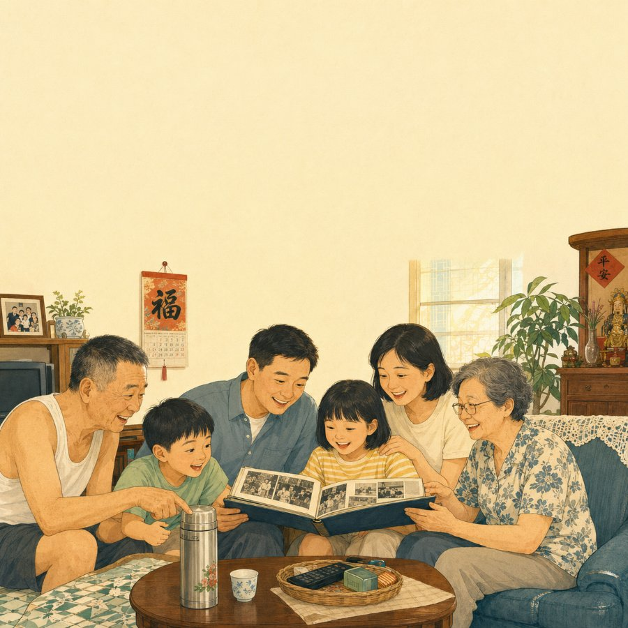
v1（背景偏黃）
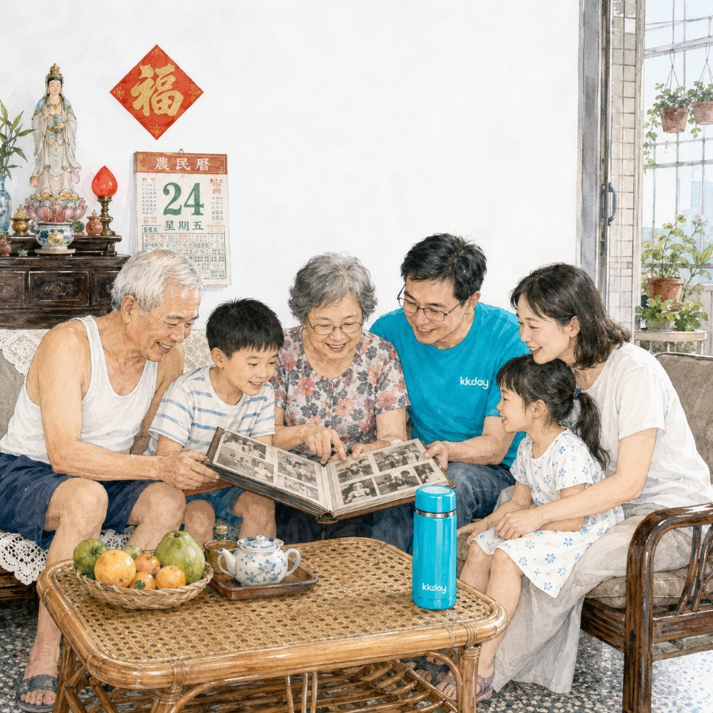
v2（修正・品牌青綠定錨）✦
退休樂活情境 · 16:9
v2 改動：淺冷灰藍天空＋teal外套＋teal公園器材
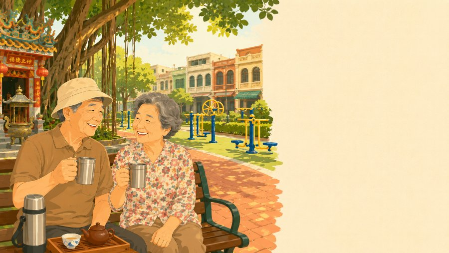
v1（背景偏黃）
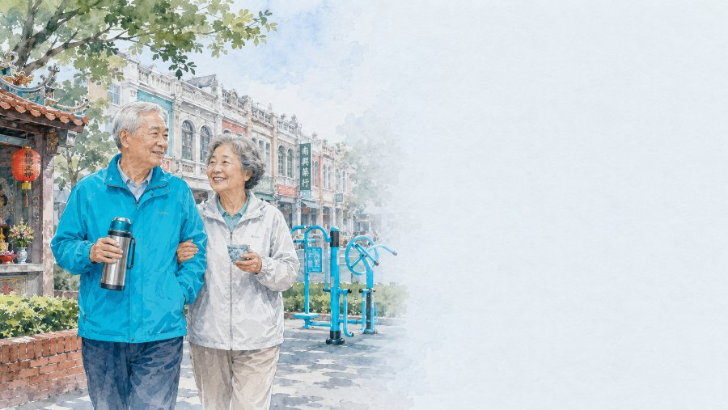
v2（修正・品牌青綠定錨）✦
長照陪伴的溫度 · 16:9
v2 改動：淺青綠牆＋teal polo＋暖橘抱枕去無菌感
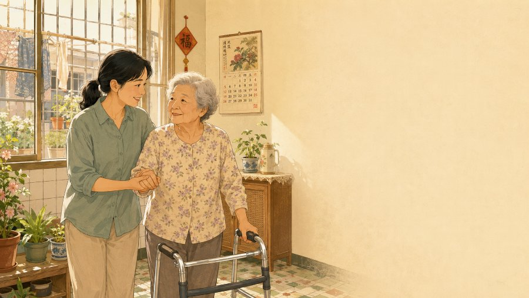
v1（背景偏黃）
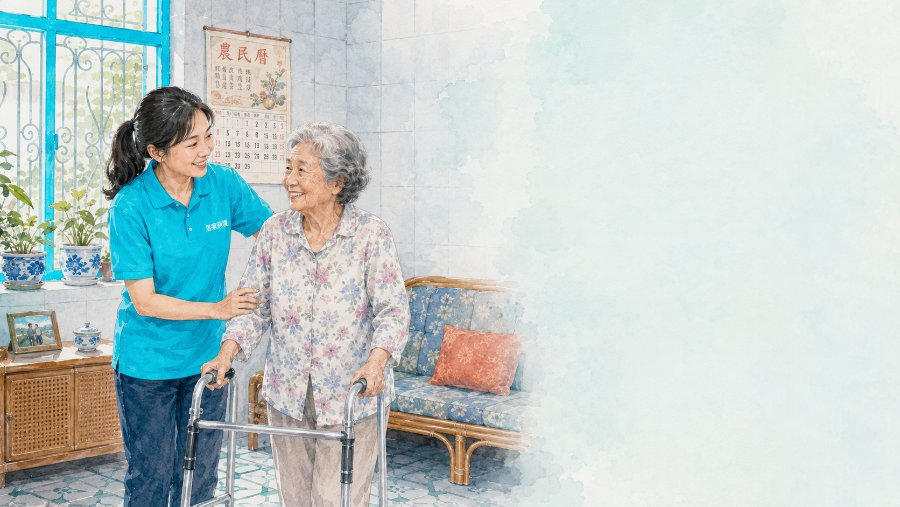
v2（修正・品牌青綠定錨）✦
新生兒家庭保障 · 1:1
v2 改動：乾淨柔白＋teal polo＋teal薄毯
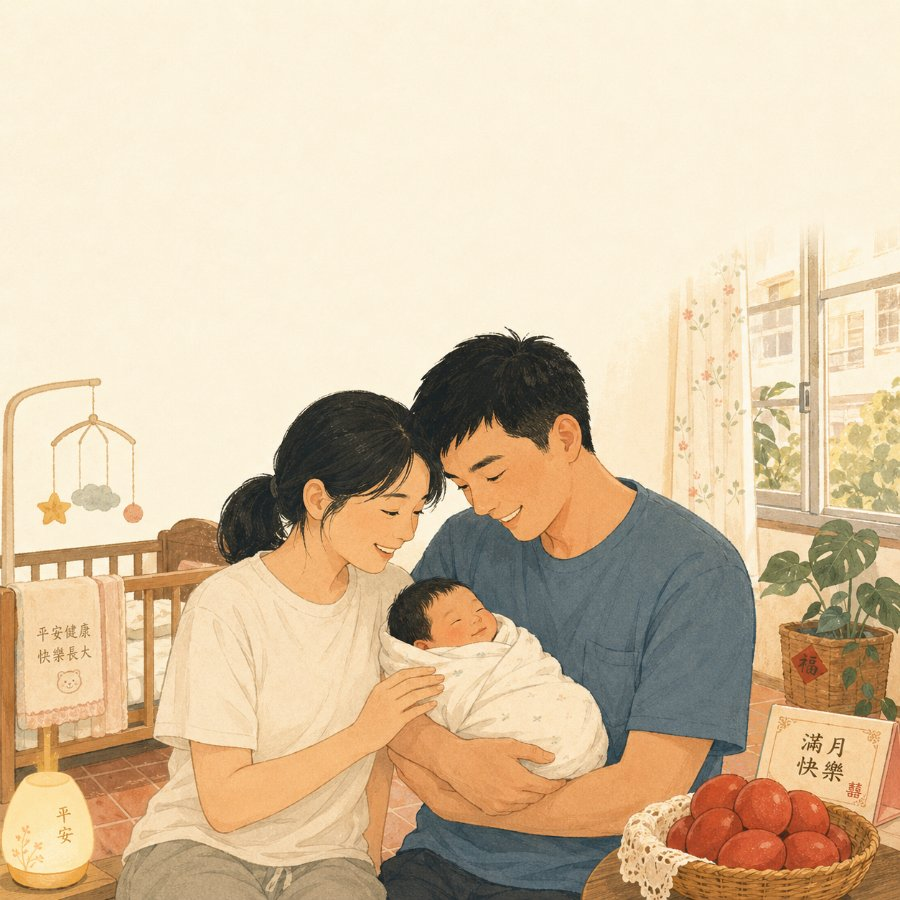
v1（背景偏黃）
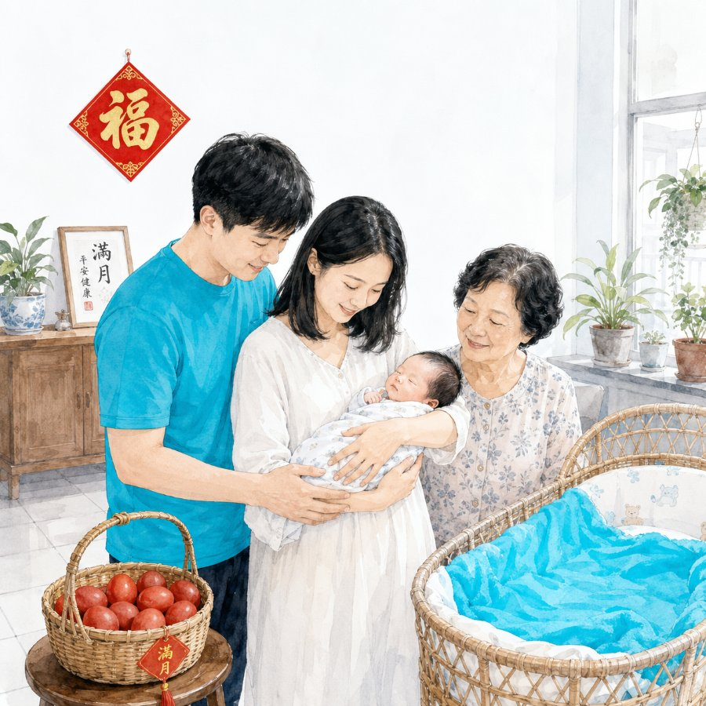
v2（修正・品牌青綠定錨）✦
中秋烤肉團圓 · 1:1
v2 改動：深藍夜空＋金邊標題＋teal保溫瓶
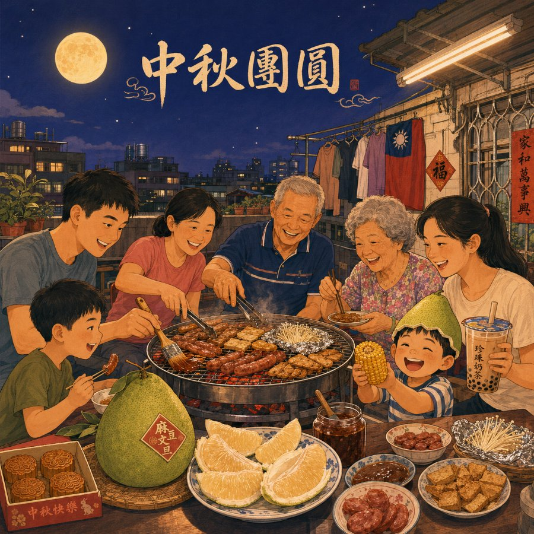
v1（背景偏黃）
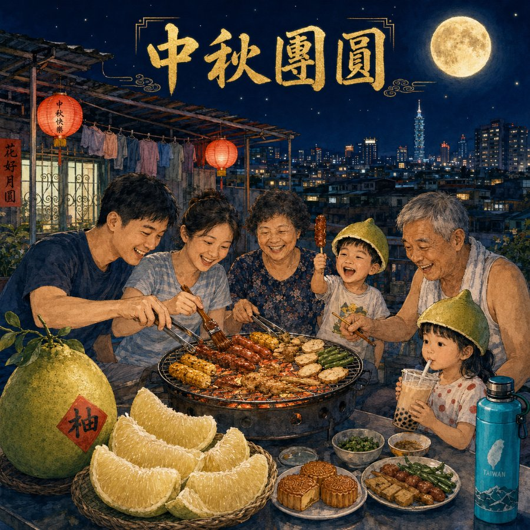
v2（修正・品牌青綠定錨）✦
過年拜年紅包 · 1:1
v2 改動：乾淨暖米白牆＋紅金更跳＋teal小物
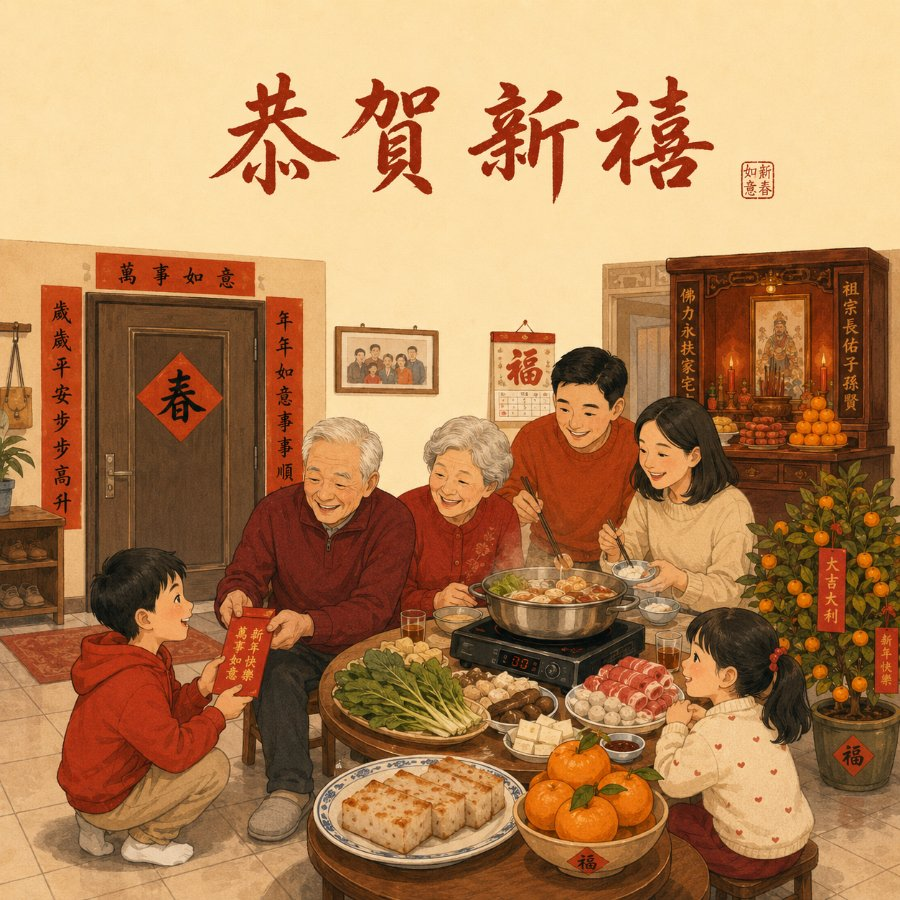
v1（背景偏黃）
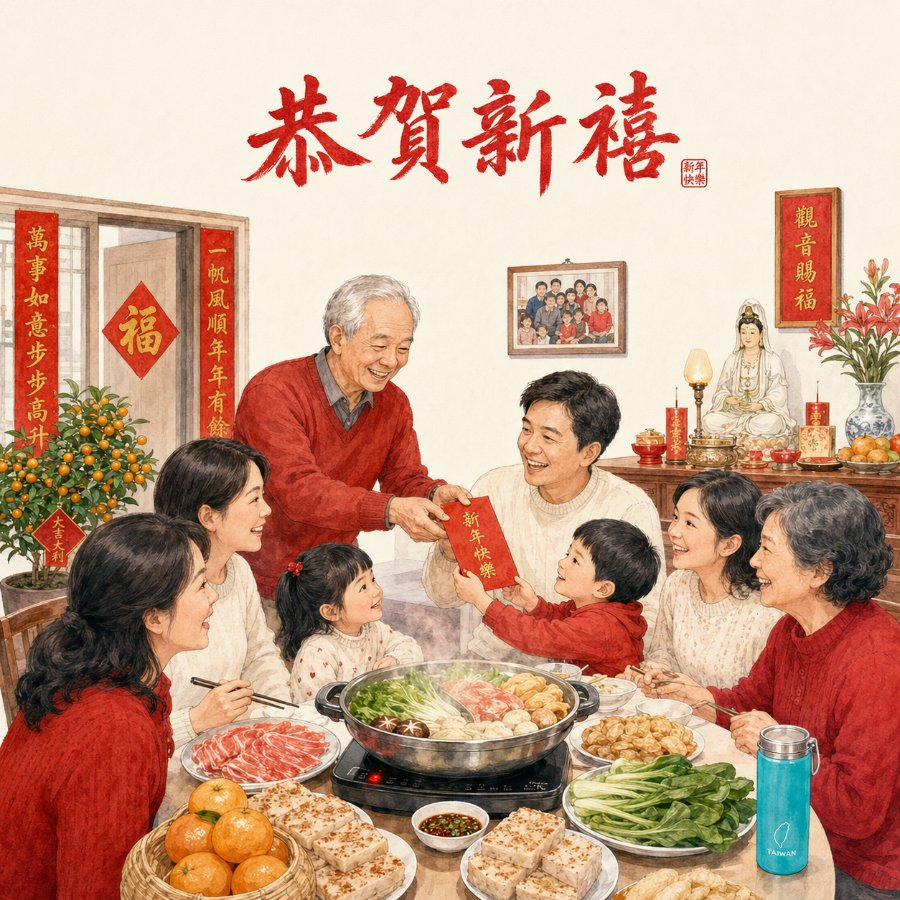
v2（修正・品牌青綠定錨）✦
怎麼修的：砍掉風格基底裡疊太多的暖色詞（米黃／暖橘／暖黃膚色／午後斜陽），背景改「乾淨冷中性」（柔白 #FAFCFD／淺冷灰藍 #EAF0F3／淺青綠 #E3F2F4），並把品牌青綠 teal #00D4FF 落到每張的具體物件（衣服／保溫瓶／窗框／薄毯）當定錨。暖色只留給該暖的節慶圖（中秋走深藍夜景、過年走紅金＋乾淨暖米白牆）。
下一步（待您點頭）：台灣味＋配色都 OK → 用這套 v2 風格基底規模化到 300 張。